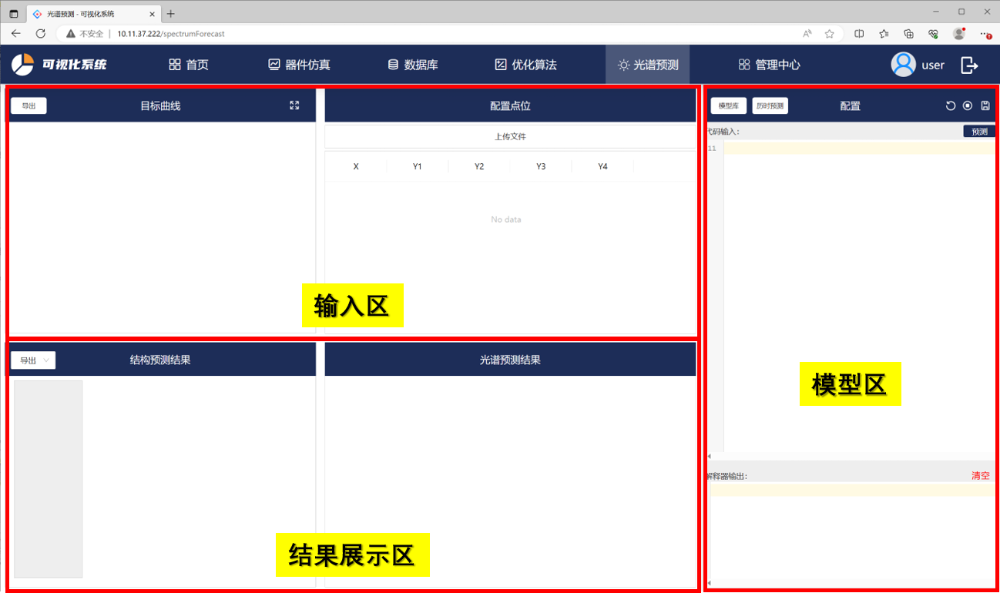
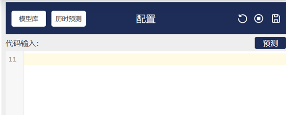
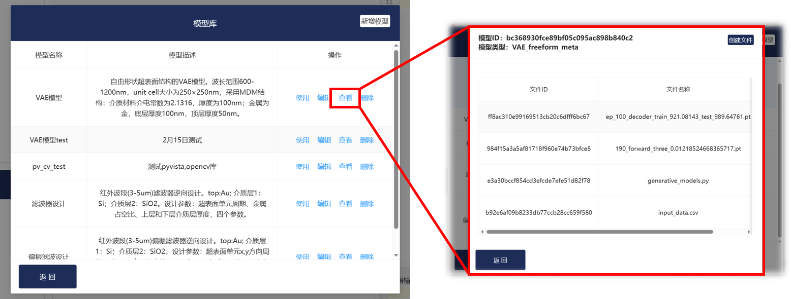
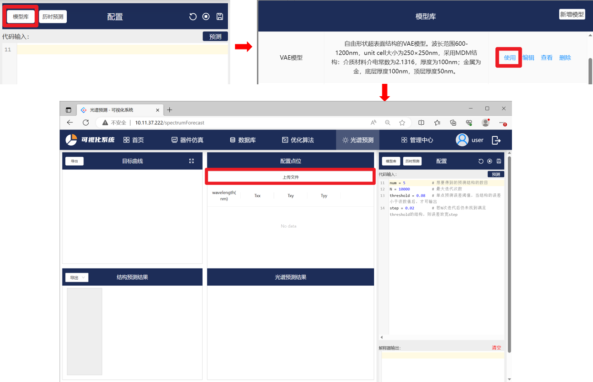
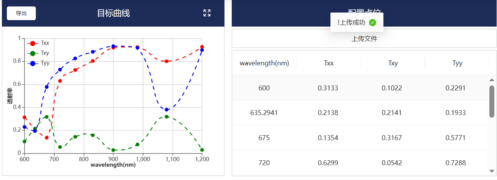
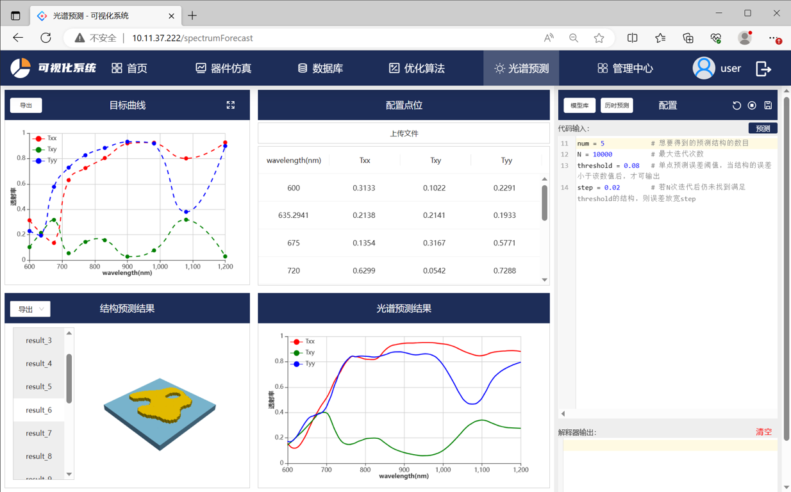

光谱预测
光谱预测模块介绍
首先点击光谱预测模块，进入初始化页面：

本页面的各功能模块基于VAE模型开发（VAE模型介绍详见深度学习模块）。
本页面可分有三个功能区域：输入区、模型区、结果展示区。
输入区上传并展示传入VAE模型的光谱数据，模型区用于选择光谱预测的模型，结果展示区用于展示VAE模型的多样性预测结果。
以下是输入区和结果展示区中各模块的详细介绍：
输入区曲线模块：绘制”配置点位“模块中上传的数据。
输入区配置点位模块：点击”上传模型”，上传本地csv文件。csv文件格式：光谱数据按列排列，第一列为横坐标数据，其余列为纵坐标数据。
结果展示区结构预测结果模块：展示VAE模型的多样性结果。”导出”按钮导出右侧光谱预测结果的CSV文件或版图GDS文件。
结果展示区光谱预测结果模块：展示左侧微纳光学结构对应的光谱预测结果，可与目标曲线直观进行对比。

在模型区配置模块中：
点击模型库：可添加/删除模型。点击“查看”，可上传模型中用到的模型文件。在模型中，通过“文件ID”调用上传的模型文件：
#load generative model
generative_models = forecast.get_model_file('e3a30bccf854cd3efcde7efe51d82f78')
file_path = 'generative_models.py'
模型库中保存模型名称及模型参数化描述，用户可以点击操作中的功能来使用、编辑、查看或者删除模型。 
历时预测：保存历时预测结果。通过点击右上角的保存标志保存。
代码输入：点击模型后，在此处输入必要的参数，比如最大迭代测试、单点预测误差、制造限制等。
预测：运行模型代码，该模型对输入数据的预测。
解释器输出：运行模型代码时的python解释器输出。
可点击停止按钮强停止仿真过程
光谱预测使用实例
本节以自由形状结构超表面的VAE模型。
Step1: 选择模型

Step2: 上传输入模型的光谱数据，文件类型为csv
该模型输入x的范围为600-1200，y的范围为0-1。

上传后，点位可在y方向上拖动，右侧可查看拖动后点位的精确数值。模型预测读取的是实时的输入数据。
Step3：预测结果
在代码输入窗口中输入必要参数：预测结构数目、最大迭代次数、单点预测误差阈值等。
点击预测按钮后开始预测结构并实时反馈结构对应的光谱结果。
待迭代循环完毕后可导出预测的光谱结果以及结构的GDS版图。
